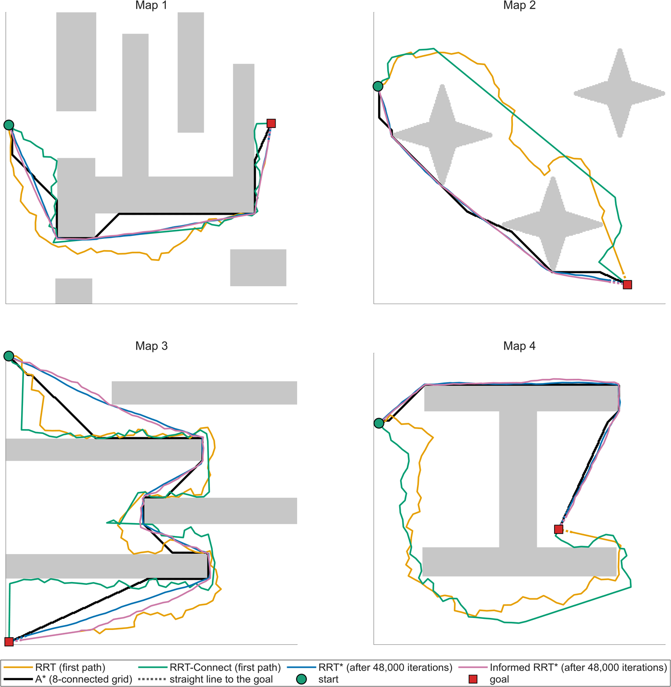
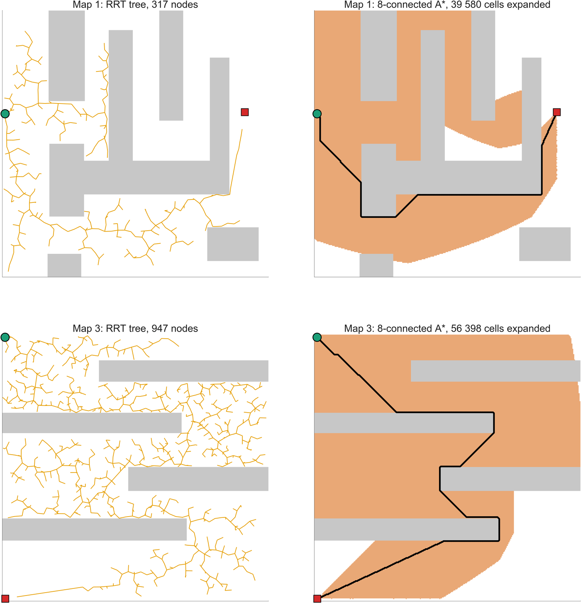
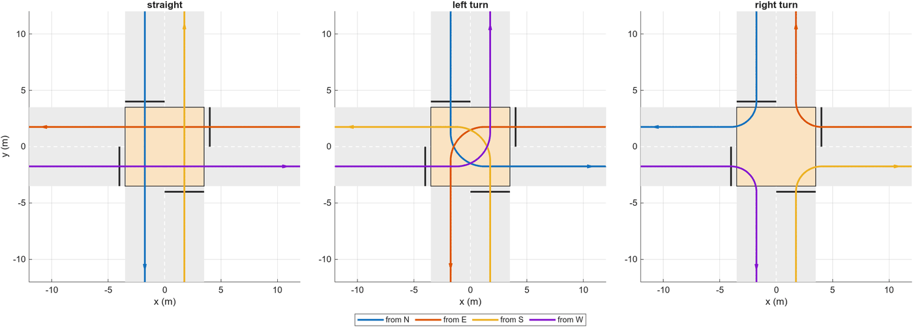

Autonomous Vehicles (Prof. Stefano Arrigoni)
Politecnico di Milano · 2025
These three course projects explore how to find a route, get a robot to follow it, and coordinate several vehicles when their routes cross.
RRT builds a tree by sampling positions and connecting them through free space. I implemented three variants alongside it: RRT-Connect grows trees from both ends to find a route quickly; RRT* keeps improving the route by changing connections in the tree; and Informed RRT* focuses later samples on a region that could contain a shorter path.
I compared all four with A* on four obstacle maps at two resolutions, 30 × 30 and 300 × 300 cells, measuring path length, planning time and memory use. Each sampling planner ran 50 times per map and resolution with fixed random seeds.


I used a TurtleBot3 Burger in ROS 2 / Gazebo, with planning and control written in MATLAB. First, I drove
the robot through the house by keyboard and built a map with slam_toolbox. The navigation system
then plans a route on this map and follows it with a waypoint controller that adjusts speed and heading from
the robot's estimated position.
Giving the robot room to turn. I tested two A* implementations against MATLAB's built-in shortest-path solver, but following the shortest route exposed a practical problem: it passed too close to furniture, and the robot tipped over at a tight corner in one run. I changed the route cost to favour more space around obstacles. The resulting route, computed with MATLAB's solver, was 14.5 % longer but gave the robot much more room at that corner; it completed both repeat runs successfully.
Handling a blocked route. The robot compares its laser scans with the map. If repeated scans reveal a new obstacle on the route ahead, it stops, adds the obstacle to the planning grid, and uses my heap-based A* to find a detour before resuming. In the run shown at the top of the page, replanning took about 24 ms and the robot reached its destination.
One choice was specific to this simulation: the final system relies on the nearly exact odometry for mapping and localization. Scan matching and loop closure produced map distortions in the house's repetitive geometry, so I disabled both after comparing the results. A real robot would need to account for odometry drift.
In this MATLAB simulation, vehicles approach a four-way intersection at random and choose to go straight, turn left or turn right. Each vehicle controls its own motion, while a central manager decides when it may enter. Vehicles with non-conflicting paths can cross together; before granting permission, the manager simulates their expected motion to check for conflicts.
The first policy follows familiar yielding rules: give way to vehicles on the right, and, when turning left, to oncoming vehicles going straight or turning right. These rules apply when the vehicles' paths conflict.

Breaking a deadlock. I extended the two-vehicle task to four vehicles, one per approach. This creates situations where everyone waits for someone else: if all four turn left, each yields to the vehicle on its right. The manager detects the standstill and gives one vehicle priority so traffic can move again, while keeping the same conflict checks. I also implemented a first-come-first-served policy to avoid this circular waiting.
I checked all 54 two-vehicle combinations against hand-worked expectations, then compared the policies in repeated simulations at three traffic arrival rates. With identical traffic demand, first-come-first-served reduced the observed deadlocks from ten to zero. Throughput and waiting times changed only slightly, with no consistent improvement across both measures.
For the navigation project, the next step is to move from Gazebo to a real TurtleBot3. This would mean combining odometry with laser-based localization to handle drift, then testing tracking and replanning with real sensor noise and motion errors.
Many thanks to Prof. Stefano Arrigoni, who taught the Autonomous Vehicles course at Politecnico di Milano.